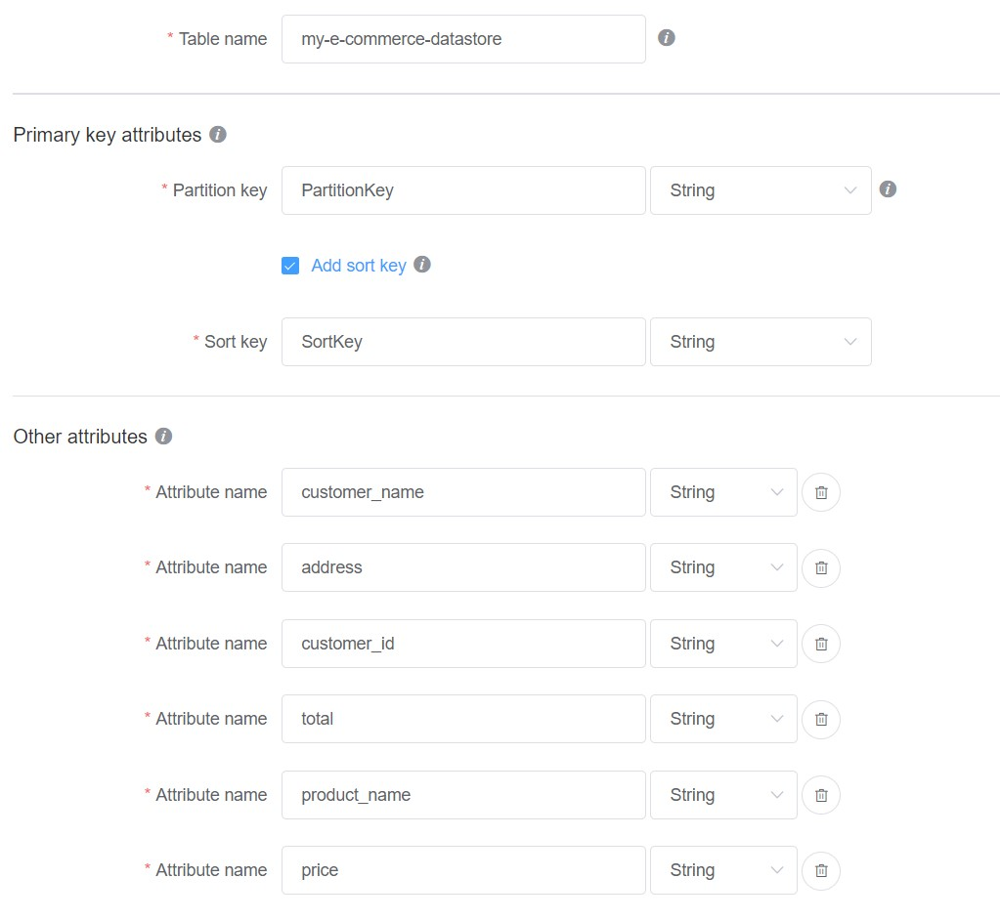
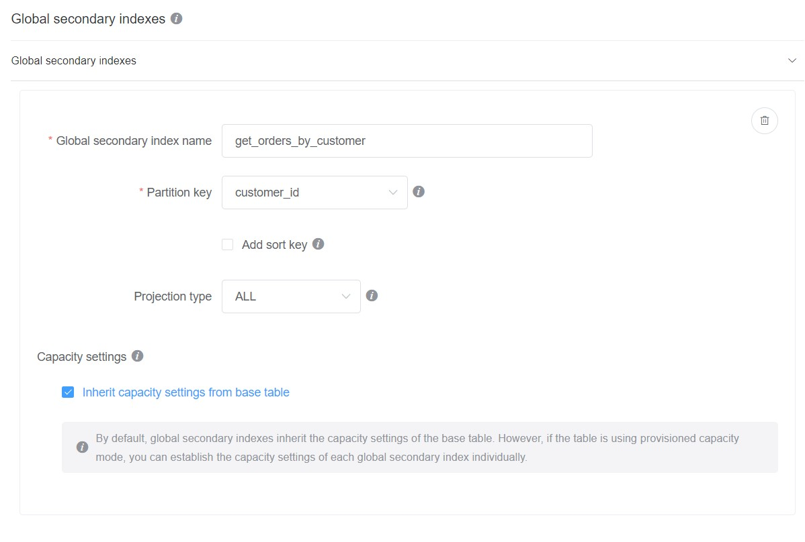
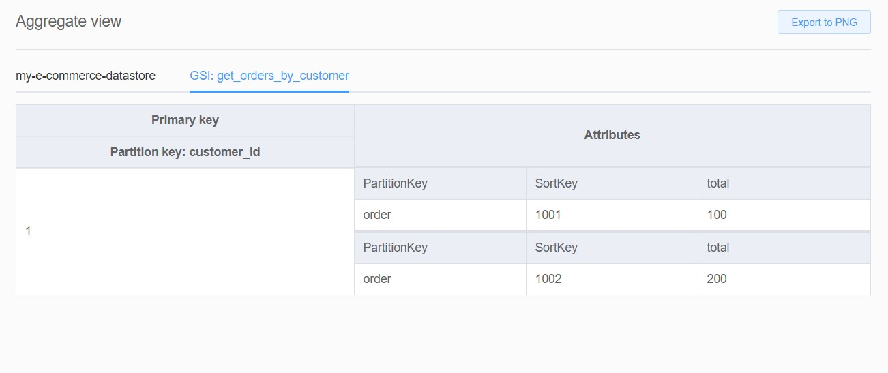

AWS DynamoDB - My notes on single table design
When it comes to designing a data store for your application, there are many options to choose from, each with its own set of advantages and disadvantages. One option that is gaining popularity among developers is using a single table of Amazon DynamoDB. Also, Amazon strongly recommends designing single table for most of the applications. We recently experimented with using a single table for one of our applications at work and through this article, I will be sharing my experience. I will be discussing the advantages and limitations of using a single table design, as well as the best practices that I researched and learned along the way. We ended up using basic modeling techniques at work, however this article is intended to also share the research I did about some advanced single table design techniques and possible pitfalls. This article might provide some insights into how to effectively use or design a single table.
Its always best to come to a common understanding of what is meant by single table design. So Let’s start from basics:
Introduction
In DynamoDB, single-table design is a method of storing all data in a single table, rather than using multiple tables for different data types or use cases. This approach is achieved by using a composite primary key, which consists of both a partition key and a sort key. A composite primary key allows you to store multiple data types or entities in a single table, while still being able to retrieve and query data efficiently.
For example, imagine you have an e-commerce application and you want to store data about customers, orders, and products. With single-table design, you could store all of this data in a single DynamoDB table, using the partition key to distinguish between different types of data, and the sort key to sort data within each partition. Here’s an example of how you might set up a table:
| partition key | sort key | other attributes|
---------------------------------------------------
| "customer" | "customer_id"| name, address, etc|
---------------------------------------------------
| "order" | "order_id" | customer_id, total, etc |
---------------------------------------------------
| "product" | "product_id" | name, price, etc |
In this example, the partition key is “entity” and the sort key is “entity_id” . This table can have many other attributes like name, address, price etc. Using this structure, you can retrieve all orders by using the “order” partition key and order_id as the sort key. Or you can retrieve all product details for a specific product by using “product” as the partition key and the product_id as the sort key.
With basic definition out of our way, lets dive into the bend of mind that is required to design such a table. Before starting to design a table you have to come up with ways in which you’d like to access data from this table. This is commonly known as “Access Pattern”. In fact, in the previous paragraph what you read about retrieving data with the help of partition and sort keys are indeed access patterns. Coming up with access patterns at the beginning helps to model the table better.
Access Patterns explained
Needless to say, just having a partition and sort key on a table cannot support all the possible access patterns. For instance, what if I want to retrieve all orders for a given customer? As you can see in the above table, there is no way you can query that information. This is where GSIs, abbreviation for Global Secondary Index comes to rescue. Let’s take a look at GSIs and try to understand that with help of an example.
Global Secondary Indexes
A global secondary index (GSI) in Amazon DynamoDB is a secondary index that has a different partition key than the primary key of the table. This allows you to create and maintain one or more secondary indexes on your DynamoDB table in addition to the primary index.
Using the same example mentioned before, let’s say you want to query all orders for a give customer_id then you might want to create a GSI on the table to support this access pattern. This GSI would have customer_id as the primary key.
Note I am using [No Sql Workbench] to model the database table below. I highly recommend to use this tool for modeling, as it makes it easy to quickly visualize the changes made on the model.
Pictures are worth 1000 words, so here is a screenshot of how the table is designed with primary and sort key with different attributes.

Here is the screenshot of GSI to support the access pattern of accessing orders based on a customer_id

I added some dummy data to show how the GSI was able to support our access pattern.

As you can see, the GSI made customer id as the primary key and projected all other attributes related to order in this view.
Similarly its is easy to create GSIs to support additional patterns in future.
GSI is not the only way to support additional access patterns, there are three more ways to support additional access patterns:
-
Local Secondary Index (LSI): Similar to GSI but only allows to use the same partition key but different sort key. It can be useful if you only need to change the sort key and are fine with the queries always happening within a single partition.
-
Scans and Queries: Another option is to use the Scan and Query operations provided by DynamoDB. These operations allow you to retrieve data from your table based on any attribute, but they can be less efficient than using a well-designed index. Scans and queries can be useful when you need to perform ad-hoc queries or retrieve data that doesn’t fit easily into a predefined index.
-
Dynamic Attributes: You can also make your schema more flexible by allowing dynamic attributes. This allows you to add arbitrary new attributes to your table, allowing you to store more information on your items, and potentially, enable new access patterns with it. For instance, you can create an attribute of type
mapand add data in the form of key value pairs. In the below schema, dynamic_attribute is a map and it can store any additional information that might be required about a customer
{
"pk": "customer#1",
"sk": "info",
"name": "John Smith",
"email": "john.smith@test.com",
"dynamic_attribute": {
"phoneNumber": "+31 67777777",
"address": "123 some street, 3332AA"
}
}
Note It’s important to keep in mind that adding new access patterns to an existing table can have an impact on the performance and cost of your application, so you should carefully evaluate any changes you make. For example, creating new GSIs can increase the amount of data stored in your table and the read/write capacity needed to support them.
Guidance for creating partition key for high volume applications
When you choose an appropriate partition key, it should be chosen in such a way that it naturally distributes the requests across partitions in an even manner. This can be achieved by choosing a partition key that has a high cardinality, meaning that it has a large number of unique values. This will ensure that the requests are spread across multiple partitions and reduce the chance of a hot partition (more about this is explained below).
For example, if you have an e-commerce application and want to store information about different products, you could choose the product id as a partition key. This would ensure that the requests for different products are spread across different partitions and would reduce the chance of a hot partition.
Another example is if you have a customer data on DynamoDB and you have customer Id as partition key but most of the requests are for a specific customer then customer Id partition will become hot partition. To avoid this, you can use salted partition keys, where you add some random value to partition key before storing, this will ensure that requests are spread across all partitions.
Consequences of bad design
There are consequences of wrong choice of partition keys. A wrong choice may lead to a specific partition to be accessed over and over again resulting in creating a so called “Hot partition”.
Hot Partition
Hot partition can occur when the access patterns of a single table design are not well-distributed across the table’s partition key, resulting in a disproportionate number of requests going to a single partition. This can cause performance issues, such as increased latency and throttling.
A common cause of hot partitions is when the access pattern is not evenly distributed. For example, if most of the requests are for a specific partition key value then that partition will become hot.
Mitigation techniques
There are several ways to mitigate hot partitions in DynamoDB Single Table Design:
-
Scaling: One way to address hot partitions is to scale the read and write capacity of the table to handle the increased traffic.
-
Spread the access evenly: By choosing an appropriate partition key and distributing the access patterns evenly across the partition key, you can reduce the likelihood of hot partitions.
-
Use advanced partitioning techniques: By using advanced partitioning techniques like dynamic partitioning, where the partition key is computed at runtime based on the data, you can also reduce the likelihood of hot partitions. More on this a later.
-
Use Time To Live (TTL) attribute: you can use DynamoDB’s TTL feature to automatically delete old data, which can help to avoid hot partitions caused by stale data.
-
Use read replicas: If you are using a single table design and the read hot partition is a concern, you can make use of read replicas. This will replicate the data to multiple tables and read requests can be distributed across them.
Dynamic partitioning
Dynamic partitioning in DynamoDB is a technique that allows you to spread data across multiple partitions by changing the partition key based on the data. This can be useful when dealing with large amounts of data, or when you expect the access patterns to change over time.
One way to achieve dynamic partitioning in DynamoDB is to use a computed partition key. For example, instead of using a simple partition key like a user ID, you could use a hash of the user ID combined with a timestamp. This way, new items with the same user ID will be spread across different partitions based on the timestamp, reducing the chance of a hot partition caused by a monotonically increasing partition key.
Another way to achieve dynamic partitioning is to use a partition key that is derived from the data. For example, if you are storing documents, you could use the first letter of the document title as the partition key. This way, the data will be spread across partitions based on the first letter of the title, and the access patterns will be evenly distributed.
Here is an example of how you could use dynamic partitioning to store tweets in DynamoDB:
var date = DateTime.Now;
var timestamp = date.Ticks;
var tweetText = "This is my tweet!";
var tweetUserId = "1001";
using (var md5 = MD5.Create())
{
var hash = md5.ComputeHash(Encoding.UTF8.GetBytes(tweetUserId));
var partitionKey = $"tweet_{BitConverter.ToString(hash).Replace("-", "")}_{timestamp}";
var doc = new Document();
doc["partitionKey"] = partitionKey;
doc["tweet"] = tweetText;
doc["tweetUserId"] = tweetUserId;
var client = new AmazonDynamoDBClient();
var request = new PutItemRequest
{
TableName = "tweets",
Item = doc
};
var response = await client.PutItemAsync(request);
}
here the partition key partitionKey is generated by concatenating the hash of the tweetUserId and a timestamp. This ensures that tweets by the same tweet user are spread across different partitions based on the timestamp and not clustered on the same partition key, thus reducing the chance of hot partition.
When to avoid single table design
While single table design in DynamoDB can be powerful and efficient for many types of applications, there are certain cases where it may not be the best choice. Here are a few examples of when a single table design might not be suitable:
-
Applications with highly relational data:
Single table design can work well for storing denormalized data, but if your data has complex relationships and you need to perform joins across tables, a single table design may not be the best option. In this case, it may be more appropriate to use a relational database like Amazon RDS or MySQL.
-
Applications with very high write loads:
Single table design allows you to horizontally scale your read and write capacity, but if your application requires extremely high write loads, it may be more cost-effective to use a different storage solution that is optimized for write-intensive workloads, such as Amazon S3 or Amazon Redshift.
-
Applications that need advanced query capabilities:
While single table design can support complex filtering and sorting using global secondary indexes and Elasticsearch, some applications may require more advanced querying capabilities like geospatial indexing and full-text search. In this case, it might be more appropriate to use a different database solution such as Amazon Elasticsearch service or Amazon RDS for PostgreSQL.
-
Applications that need to support very large items:
DynamoDB has a limit of 400 KB for item size. If your item size is likely to exceed this limit, then you may need to consider using a different storage solution like Amazon S3 or Amazon Redshift
-
Applications with unpredictable access patterns:
Single table design is based on the primary key, if the access patterns are not predictable it could lead to uneven distribution of the data and cause hot partitions. In this case, you might want to consider using a different database solution like Amazon RDS, which allows you to create read replicas to handle uneven read workloads.
The article is quite long, however I believe I’ve just scratched the surface of this design technique. For further reading I would advise to refer to the AWS documentation on DynamoDB and watch this video (a bit lengthy, but worth watching) by Rick Houlihan where he explained the technique quite nicely.
Please contact me if you have any questions on this topic and feel free to share it with others if you think it is useful!